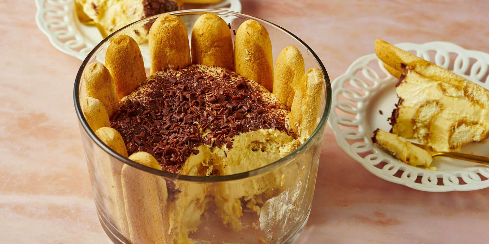

Home
Classic Tiramisu

Description
This easy tiramisu recipe makes a classic Italian dessert with ladyfingers dipped in coffee liqueur and a sweet mascarpone mixture. I think the layers look beautiful when you make the tiramisu in a glass bowl and dust the top with cocoa powder and chocolate curls.
Ingredients
- 6 egg yolks
- 1 ¼ cups white sugar
- 1 ¼ cups mascarpone cheese
- 1 ¾ cups heavy whipping cream
- 2 (12 ounce) packages ladyfingers
- ⅓ cup coffee flavored liqueur
- 1 teaspoon unsweetened cocoa powder, for dusting
- 1 (1 ounce) square semisweet chocolate
Steps
- Combine egg yolks and sugar in the top of a double boiler, over boiling water. Reduce heat to low, and cook for about 10 minutes, stirring constantly. Remove from heat and whip yolks until thick and lemon-colored.
- Add mascarpone to whipped yolks. Beat until combined.
- In a separate bowl, whip cream to stiff peaks. Gently fold into yolk mixture and set aside.
- Split the lady fingers in half, and line the bottom and sides of a large glass bowl. Brush with coffee liqueur.
- Spoon half of the cream filling over the lady fingers.
- Repeat ladyfingers, coffee liqueur and filling layers.
- Garnish with cocoa and chocolate curls. Refrigerate several hours or overnight. Enjoy!